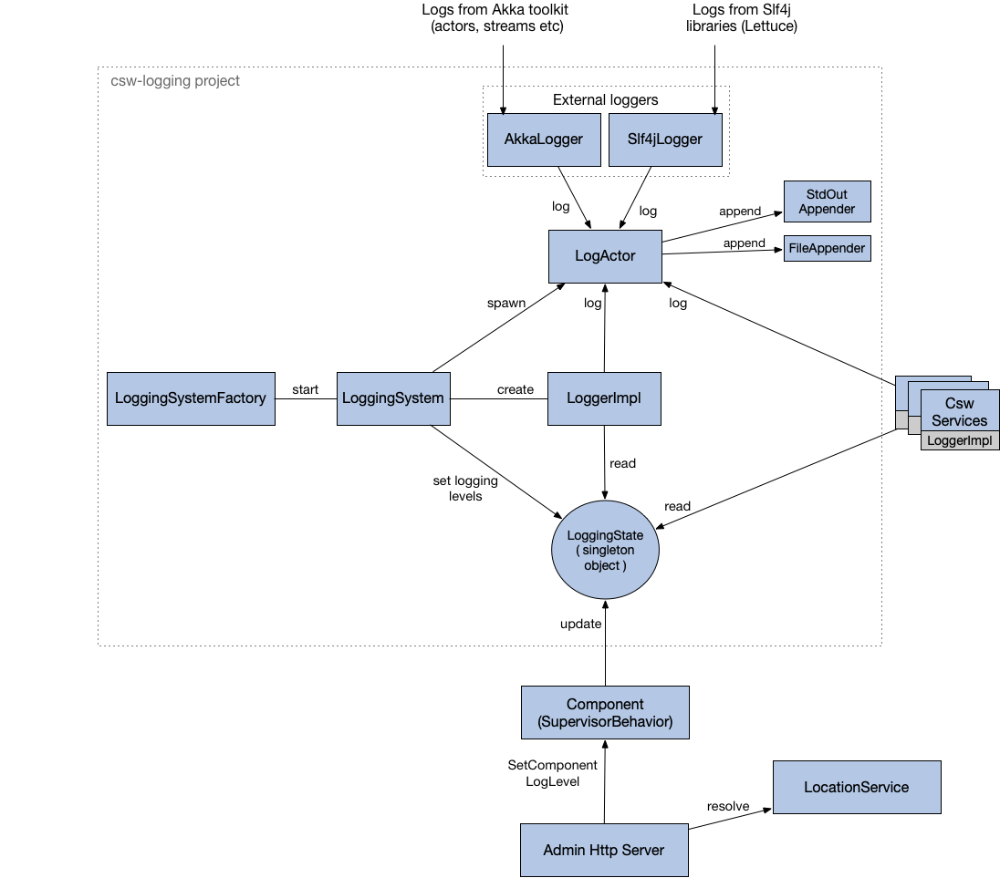

Logging Service
The Logging Service library provides an advanced logging facility for CSW components and services. The Logger API for scala and java allows logging at different levels viz., trace, debug, info, warn and error.
The library allows separate log levels for the logging API, Akka logging, and Slf4J. Also, it provides ability to set different log levels for different components. To understand how to use the API refer to this doc.
Implementation Details
Following is a diagram showing the interaction of various classes, components and services in the Logging Service ecosystem.

For each container/standalone component, a new csw.logging.client.internal.LoggingSystem is created and started with the help of LoggingSystemFactory.
LoggingSystem on creation performs various things:
-
Spawning
csw.logging.client.internal.LogActor. LogActor is the central component of Logging Service. All the messages of changing log level at runtime and logging at different levels go through the LogActor. Even external loggerscsw.logging.client.compat.AkkaLoggerandcsw.logging.client.compat.Slf4jAppendersend messages toLogActorin order to log messages to the configured appenders (StdOutAppender and FileAppender). -
Creating
csw.logging.client.internal.LoggerImplwhich is a concrete implementation ofLoggerAPI. In order to do logging of messages sent by services/components,LoggerImplalso sends messages toLogActor. -
Load the default logging configurations from
logging.confand initializecsw.logging.client.internal.LoggingStatewhich is a singleton object keeping track of the current logging state (levels of logging API, akka, slf4j and various components) of the application.LoggingSystemchanges thisLoggingStateto change logging level of services/components. AndLoggerImplpicks up from this state inorder to decide if the message needs to be logged or not depending on the current level set.
Changing the Log Level of Components
The above figure also demonstrates the flow of a request for changing the log level of a component. Such a request would be initiated by some admin dashboard which will access the Admin Http Server. On receiving the request, Admin Http Server will resolve the component using Location Service and send that component a SetComponentLogLevel message. This message is received by the component’s Supervisor (SupervisorBehavior) which then changes the global LoggingState. On any following logs of that component, the new LoggingState will be used in LoggerImpl to decide whether it needs to be logged or not.
External Loggers
External loggers like AkkaLogger and Slf4jAppender are wired up such that any logs from those libraries (Akka and others that implement Slf4j like log4j, logback, tinylog etc) will go through our facade of AkkaLogger and Slf4jAppender respectively. For AkkaLogger, there is a configuration akka.loggers specified in logging.conf which does this wiring and for Slf4jAppender logback.xml is configured. AkkaLogger and Slf4jAppender then forward these logs to the LogActor.
Hierarchy of LoggerFactories
All the services for e.g. Event Service, Alarm Service etc, create their own instances of LoggerFactory which inherit from LoggerFactory provided by csw-logging-client.
The below diagram shows the hierarchy of the LoggerFactory and where do the Service Loggers stand in that tree.